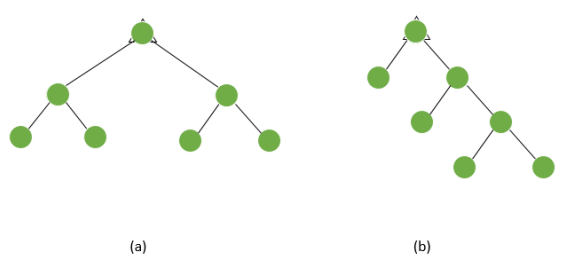
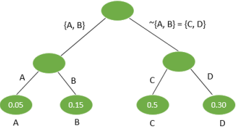
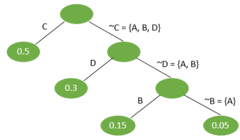

La importancia del cálculo de la longitud de la cadena de un árbol binario radica en el hecho
que esta cantidad está a menudo relacionada con el tiempo de realización o el costo de la
investigación.
En claro que el tipo de árbol con n vértices que produce la longitud de la cadena mínima es
aquel con 2^lmax - 1
vértices en el nivel lmax – 1.
En muchas aplicaciones, todos los vértices pendientes Vj de un árbol binario T tienen asociado
un número real positivo P(Vj) que llamamos el peso Vj; que para el caso de procedimientos
investigativos puede considerarse como costo o el tiempo para lograr cada resultado, dados,
p(V1), p(V2) …p(Vp), se pide construir un árbol binario (con p vértices pendientes) que
minimice.
∑𝑝(𝑉𝑗) 𝐿𝑗
Donde Lj es el nivel del vértice Vj; y esta suma se toma sobre todos lo vertices pendientes.
Para ilustrar el significado de este problema procedemos a desarrollar el siguiente ejemplo:
Una máquina de Coca—Cola puede identificar, mediante una secuencia de preguntas la
moneda que ha sido depositada en la máquina. La máquina acepta monedas de 2, 5, 10 y 20
pesos.
Asumimos que la probabilidad que cada una de estas monedas sean depositadas en la maquina
son 0.05, 0.15, 0.5 y 0.3 respectivamente. Cada pregunta tiene efecto de particionar el
conjunto formado por las cuatro clases de monedas en dos subconjuntos complementarios y
la monada desconocida se identifica en uno de estos dos subconjuntos. Para el caso se presenta
2^3- 1 * posible de tales preguntas: esto es
Sea
A la moneda de 2 pesos
B la moneda de 5 pesos
C la moneda de 10 pesos
D la moneda de 20 pesos
Las posibles 2^3- 1 preguntas Son:
(A) o (B, C, D)
(B) o (A, C, D)
(C) o (A, B, D)
(D) o (A, B, C)
(A, B) o (C, D)
(A, C) o (B, D)
(A, D) o (B, C)
________________________
* En general si S es un conjunto con |S|=K, el numera de subconjuntos complementarios es
2k-1 – 1 Si el tiempo requerido para responder cada pregunta es el mismo ¿Cuál es la
secuencia de preguntas que minimiza el tiempo de espera tomado por la máquina para
identificar la moneda?
La solución de este problema requiere de la construcción de un árbol binario T con 4 vértice
pendientes A, B, C, D (y 3 vértices internos) donde cada uno de ellos representa un tipo de
moneda, y su peso, la probabilidad asignada, es decir:
P(A) = 0.05
P(A) = 0:15
P(A) = 0.50
P(A) = 0.30
Cada arista del árbol T corresponde a una pregunta en el proceso de identificación. En estas
condiciones, el problema es resuelto al encontrar el árbol binario con 7 vértices que minimice
∑𝑝(𝑣1) 𝑙1 (1)
Como es sabido. existen dos tipos de árboles binarios con 7 vértices, a saber

Al hacer la asignación de los vértices pendientes tenemos:
1) Para el árbol (a) cualquiera que sea esta asignación conduce al mismo resultado de (1).
igual a 2t donde t es el tiempo en seg. Si, por ejemplo, el árbol es

∑𝑝(𝑉𝑖) 𝑙𝑖 = 0.05𝑥2 + 0.15𝑥2 + 0.5𝑥2 + 0.3𝑥2 = 2
2) Para el árbol (b) con el propósito de minimizar {1} escogemos los vértices pendientes de
modo que los de mayor peso se encuentren en los niveles inferiores
Así. El árbol del tipo {b} que minimiza (1) es:

∑𝑝(𝑉𝑖) 𝑙𝑖 = 0.05𝑥1 + 0.3𝑥2 + 0.15𝑥3 + 0.05𝑥3 = 1.7
Luego la secuencia de pregunta que minimiza el tiempo tomado por la máquina para identificar
la moneda es la seguida por el árbol del tipo (b)
Este problema tiene muchas variaciones interesantes. Por ejemplo, cuando no todas las
preguntas posibles son asequibles, o el tiempo requerido para cada pregunta es diferente.